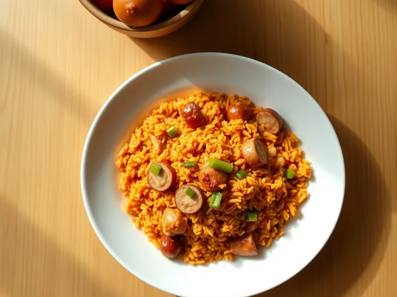

Джамбалая с курицей и колбасками
Рис, приготовленный в одной сковороде с курицей, сосисками, перцем и томатами с паприкой
30 мин4 порц.598 ккал на порциюБ 25 · Ж 30 · У 60Американская кухня
Открыть в приложении: порции, таймеры, список покупок
Продукты на 4 порц.
- Рис250 г
- Куриные бёдра2,5 шт
- Сосиски4 шт
- Перец болгарский1 шт
- Лук репчатый1 шт
- Томаты в собственном соку1 шт
- Чеснок2 зуб.
- Паприка2 ч. л.
- Растительное масло2 ст. л.
- Вода2 стак.
- Соль1 ч. л.
- Острый перец молотый по желанию1 щеп.
Как готовить
- Курицу нарежьте кусочками по 2 см, сосиски кружочками, перец и лук кубиком, чеснок порубите. Рис промойте.
- В глубокой сковороде разогрейте масло на сильном огне и обжарьте курицу 4 минуты до светлой корочки, добавьте сосиски и жарьте ещё 2 минуты до румяности.
- Добавьте лук, перец и чеснок и жарьте на среднем огне 3 минуты, пока овощи не станут мягче. Всыпьте паприку и острый перец и перемешайте.
- Добавьте рис, томаты с соком, горячую воду и соль, перемешайте и доведите до кипения.
- Накройте крышкой и готовьте на слабом огне 18 минут, не мешая, пока рис не впитает жидкость и не станет мягким. Снимите с огня и дайте постоять 3 минуты.
Совет. Вместо сосисок подойдут копчёные колбаски: с ними джамбалая получится ближе к оригиналу из Луизианы.